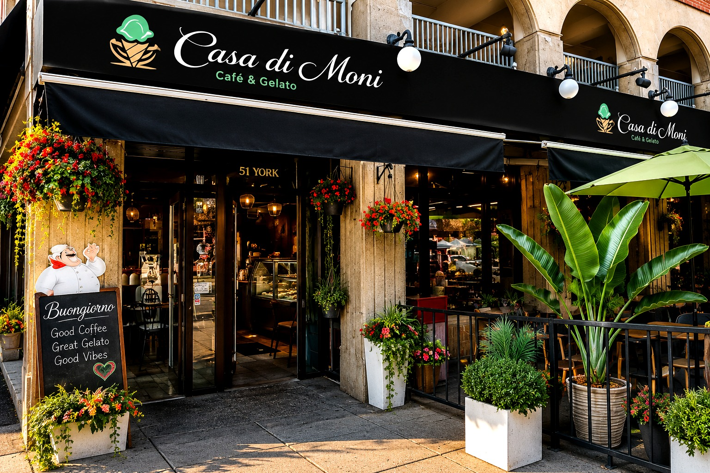

Authentic Italian dishes, artisan gelato, barista coffee, pastries, frozen treats, and more in the heart of Ottawa’s ByWard Market.
View MenuServing Ottawa with a premium selection of authentic Italian dishes and over 100 flavours of artisan gelato. We offer hot and iced-cold barista coffee, frozen treats, pastries, and more. Located in the heart of the ByWard Market, Casa di Moni has something for everyone.

Address: 51 York St, Ottawa, ON K1N 9B7
Phone: (613) 789-7172
Price range: $10–20 per person
Monday – Thursday: 9:00 AM – 11:00 PM
Friday – Saturday: 9:00 AM – 12:00 AM
Sunday: 9:00 AM – 11:00 PM